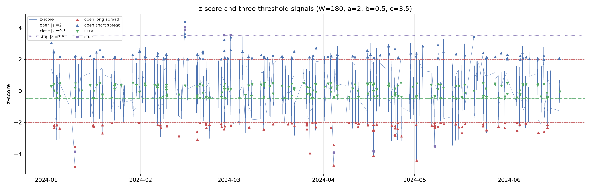

1. 数据准备
清洗国债期货与 ETF 分钟快照，统一时间戳与字段口径，处理缺失值与异常记录，重采样为 1 分钟序列；完成 ETF 分红前复权与期货主连换月拼接，形成无跳空、按时间对齐的配对价格序列。
清洗国债期货与 ETF 分钟快照，统一时间戳与字段口径，处理缺失值与异常记录，重采样为 1 分钟序列；完成 ETF 分红前复权与期货主连换月拼接，形成无跳空、按时间对齐的配对价格序列。
对 ETF 与国债期货价格做滚动 OLS（ETF 为因变量、期货为自变量），以残差构造价差；对价差做 ADF 平稳性检验，按 AR(1) 离散化估计 OU 参数 μ、θ、σ_eq 与半衰期，并计算滚动 z-score。
采用开仓、平仓、止损三阈值框架；按 β 换算两端名义价值与对冲手数，仓位随偏离幅度分层。信号在收盘生成，市价单在下一根 bar 撮合，避免使用未来信息。
在前 50% 训练期做阈值网格搜索，在后 50% 验证期检查外推表现；最终结果统一用 backtrader 复算，并与快速向量化引擎的排序结论交叉核对。
以下为合成数据 demo：120 个交易日、1 分钟频率、初始资金 1,000 万、零费率。合成数据按已知 OU 过程生成，结果用于验证研究链路，不代表真实市场表现。
| 参数 | 累计收益 | 年化夏普 | 最大回撤 | 开仓次数 |
|---|---|---|---|---|
| baseline（a=2.0, b=0.5, c=3.5） | 0.49% | 2.93 | −0.15% | 187 |
| 训练期校准（a=1.5, b=0.3, c=3.0） | 1.09% | 4.49 | −0.09% | 362 |


代码按数据、模型、策略、校准、绘图拆分；提供合成协整数据生成器与命令行入口，仓库不包含行情数据。单元测试覆盖 OLS / OU 参数恢复、无未来函数断言与回测冒烟测试，GitHub Actions 自动运行。
未计佣金、滑点、冲击成本与保证金占用；仅做一次性训练 / 验证切分；输入序列需事先完成复权与换月处理。合成数据的结果偏乐观，实盘前需要按真实费率与执行条件复测。